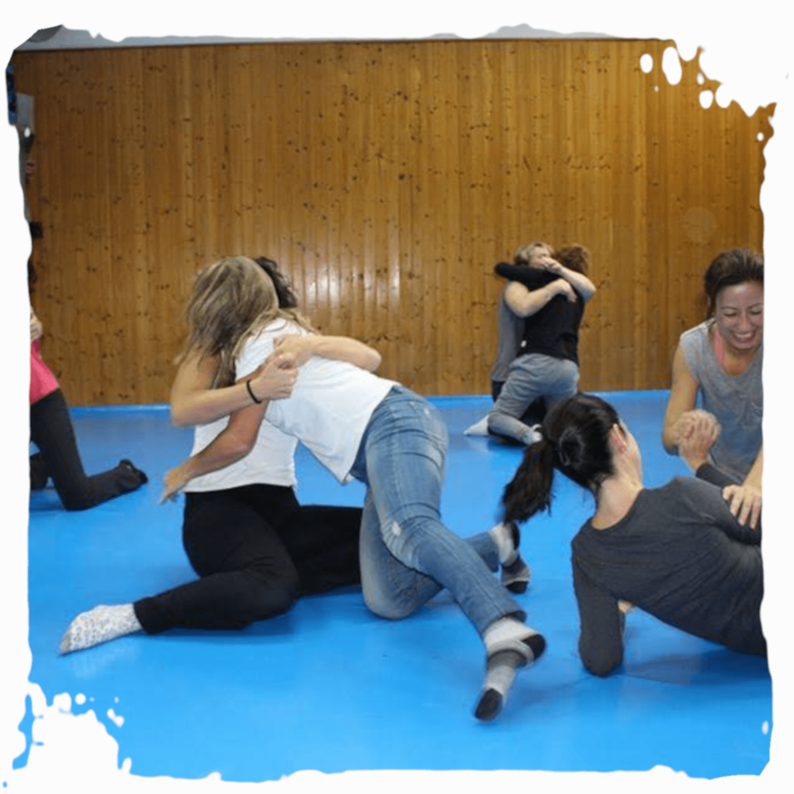

Autodefensa basada en los mismos principios que la autodefensa genérica, con consideraciones específicas para las necesidades de autoprotección de las mujeres de hoy.
La Defensa Personal Femenina o Defensa Personal para Mujeres se basa en los mismos principios que la autodefensa genérica, pero con una serie de consideraciones específicas que pretenden ajustarse a las necesidades de autoprotección de las mujeres de hoy. Por desgracia, en nuestra sociedad se suceden los casos de agresiones a mujeres, ya sea como consecuencia de la violencia de género o de la ausencia de principios morales.
Ofrecemos cursos de Defensa Personal Femenina en Sevilla Este y en otros centros, que inciden en la prevención y en la actitud necesaria ante la posibilidad de una agresión, pero también ayudan a entender cómo podríamos reaccionar mental y físicamente.
Los cursos son dirigidos e impartidos por Juan Antonio García, Cinturón Negro 5º Dan de Karate y Técnico Nivel III, especialista en Prevención y Defensa Personal Integral para Mujeres, y por José Manuel Domínguez García, Cinturón Negro y técnico cualificado.
Sin experiencia previa y sin compromiso. Te enseñamos el dojo y resolvemos tus dudas.